---
{
"layout": "note",
"title": "[Engineering Mathematics] Ch 1. 1st-order ODE - part 2",
"journal": true,
"section": "Study",
"topic": "Engineering Mathematics",
"excerpt": "[Engineering Mathematics] Ch 1. 1st-order ODE - part 2 지금까지 1. Sepearble 1st ODE, 2. Exact 1st ODE의 해를 구하는 방법을 알아봤습니다. 근데 아닌 경우는 어",
"classes": "wide",
"permalink": "/blog/mechanical-engineering/engineering-mathematics/engineering-mathematics-ch-1-1st-order-ode-part-2/",
"study_area": "Mechanical",
"date": "2024-04-09",
"source_url": "https://jeffdissel.tistory.com/m/45",
"header": {
"teaser": "/blog/mechanical-engineering/engineering-mathematics/engineering-mathematics-ch-1-1st-order-ode-part-2/images/img-001.png"
}
}
---
{% raw %}[Engineering Mathematics] Ch 1. 1st-order ODE - part 2
지금까지 1. Sepearble 1st ODE, 2. Exact 1st ODE의 해를 구하는 방법을 알아봤습니다.
근데 아닌 경우는 어떻게 구할까..
바로 강제로, Exact ODE를 만드는 것,
먼저 P, Q로 이루어진, 1st ODE가 있다고 합시다. 물론 Exact가 아닌경우,.
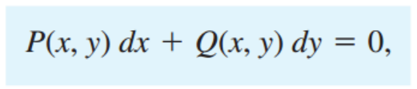
여기서 F(x,y)함수를 곱해줍니다.
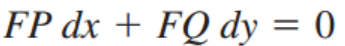
이제 이식이 Exact가 되려면, F(x,y)는 어떤 함수여야 될까를 생각해보죠.
알아낸다면?? 우리는 Exact solution을 구하는 걸 아니까 말입니다.
[Exact 조건]
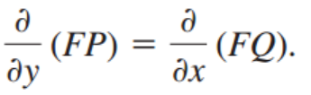
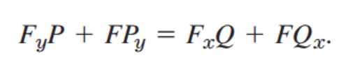
여기서 정말 중요한 가정 하나더, F=F(x)라고 합시다. 가정은 어떻게 하던 상관없습니다
WhY? F라는 함수는 그냥 임의로 곱한 함수이기 때문에 어떤 함수이던지 상관 nn
결국, 다음과 같이 위 식을 표현 할 수 있죠.
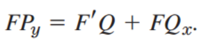
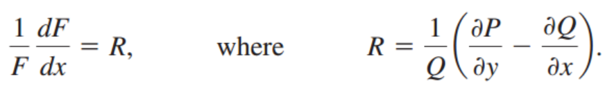
그니까 우리는 Exact ODE로 강제로 만들려고 F라는 함수를 곱해줬고, 어떤 F이어야 하는지 봤더니,
위식을 만족해야 한다는 것입니다.
근데 잘 보시면, 왼쪽은 x에 관한 함수(F=F(x)이므로) 이므로, 우측 R도 x에 관한 함수이어야 합니다
결국 결론은
F=F(x)라 가정 했을때, P,Q의 편미분 식인 R=R(x)라면, 우리는 Exact ODE로 전환 시킬 수 있는 F(x)를 찾았다는 말입니다.
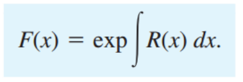
위에서 만약에 R=R(x)가 아니다?? 아직 한발 남았습니다.
F=F(y)라고 가정하고 다시 해석하면,
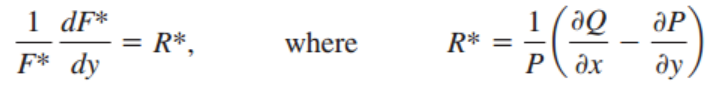
R이 만약에 y로만 이루어진 함수다?? 그러면 우리는 F(y)를 구할 수 있습니다. 다음과 같이
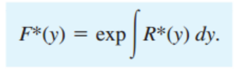
-결론-
우리는 Exact 아닌 ODE -> ODE로 만들려고 F(x,y)를 곱해주려고 한다.
그런데, F=F(x)라 가정했을때, R = R(x)이라면 -> F(x)를 구할 수 있다.
결국, Exact ODE로 만들 수 있고, 전 포스터에서의 방법으로 Solution을 구할 수 있다!!!
만약에 R=R(x)가 아니면 다음 마지막 한발을 시도해보자.
F=F(y)라 가정했을때, R = R*(y)이라면 -> F(y)를 구할 수 있다.
만약에 둘중 한가지 방법으로 F함수를 찾았다면???
F를 우리는 Integrating Factor 라고 부른다
Linear ODE, Bernoulli Equation
공학에서 가장 가장 많이 보이는 ODE는 사실 위의 경우가 아니다.
밑의 형태의 Linear ODE.
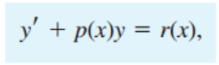
여기서 만약에 r(x) =0 이라면, 아주 쉽게 적분 하나로 solution이 나온다.
밑의 경우를 우리는
Homogenous Linear ODE
라 칭함.
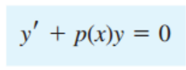
단순하게 적분하면,
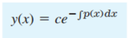
그렇다면 r(x) 가 0이 아닌 Non-Homogenous Linear ODE의 경우는???
위의 Integrating factor처럼 똑같이 F(x)를 모두 곱해주자.
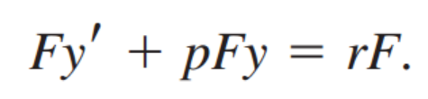
우리는 어떤 F를 곱해야 위의 식을 풀수 있을까? 가 궁금증이다.
만약에 pFy = F'y 라면 좌변을 (Fy)'으로 바꾸어서 풀 수 있지않을까???
정리하면, pF = F' -> dF/F = pdx 적분하면
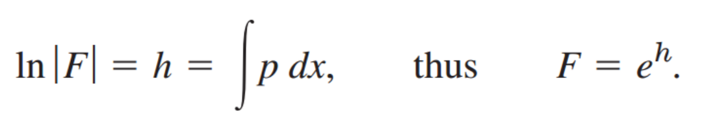
구한 F를 원래 식에 대입해주면 General Solution도출 가능.
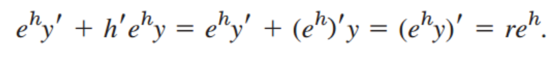
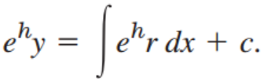
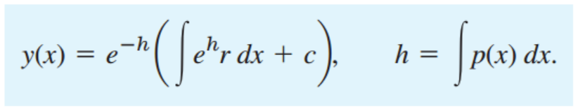
마지막으로, 신기한 모양의 1st ODE를 linear ode로 바꾸어서 해를 구해보자.
[Bernoulli Equation]
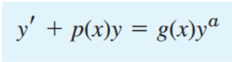
해결 방법은 바로, u(x)를 정의해주고 미분해보자. 그리고 y'=gy^a-py 대입.
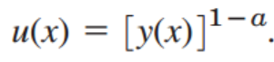
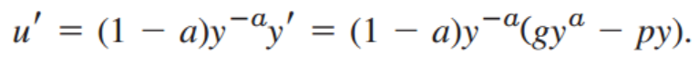
정리해주면.
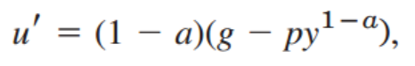
위 식에서 우항에 u가 있음을 알 수 있다.
결국, 우리는 Non-linear homogenous ODE로 변환 시킬 수 있다.
which we know how to solve it.
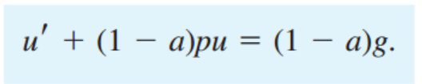
여기까지, 일단원을 마무리하기전에 지금까지 뭘 배웠는지 Remind해보자
밑의 질문을 통해서 자가진단 gogo
1. ODE란, PDE와 차이?
2. Separable ODE solution
3. Extended method (separable ODE로 만들기)
4. Exact ODE 의 solution
5. Integrating Factor(F(x) or F(y)) 을 통해서 Exact ODE 강제로 만들기
6. Homogenous Linear ODE solution
7. Non-homogenous Linear ODE solution
8. Bernoulli Equation -> Linear ODE 로 전환 시키고 Solution 구하기.{% endraw %}